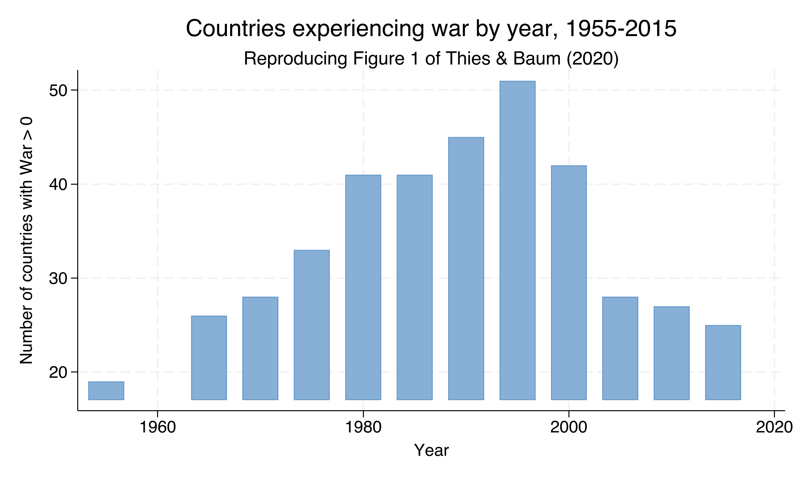
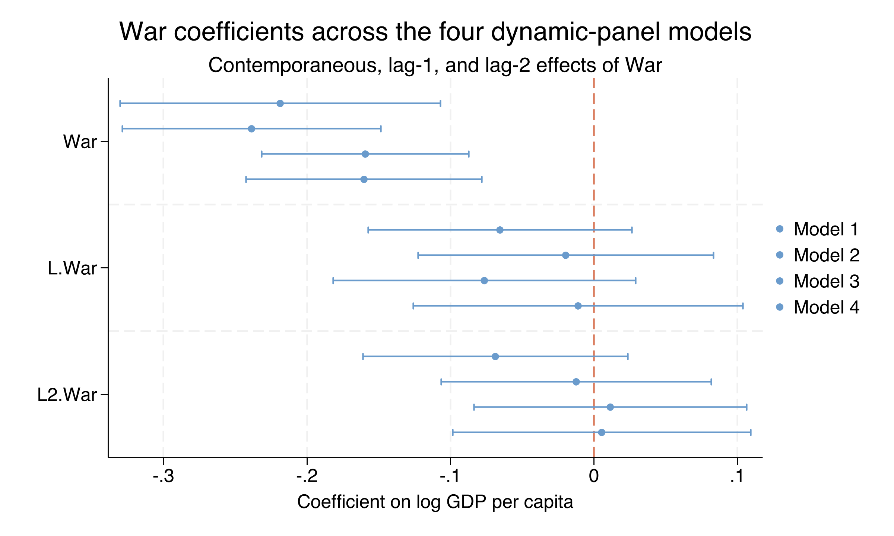
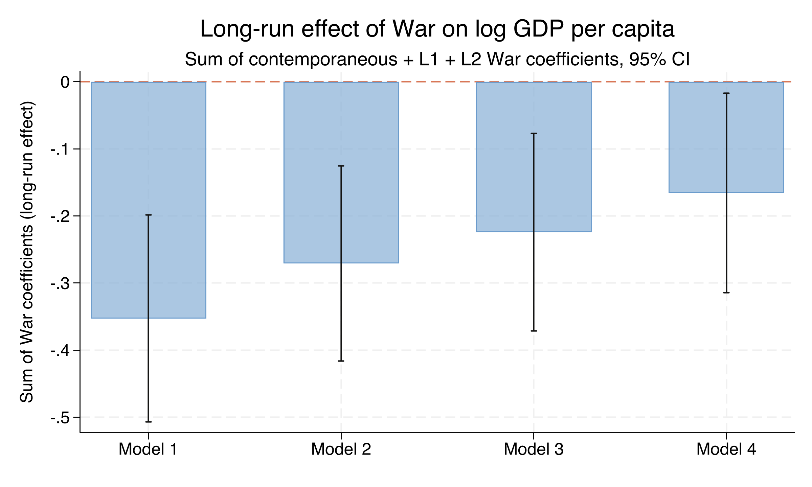
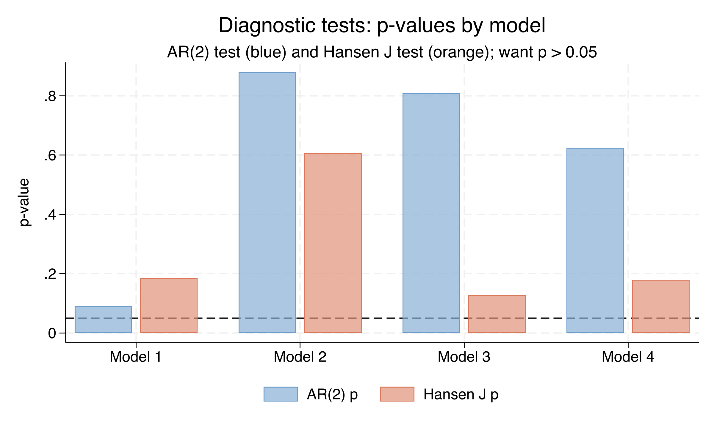

Bombs destroy factories — so why do cross-country regressions shrug?
Case studies of individual conflicts paint a dark picture. Yet cross-country regressions of growth on war often return small or insignificant coefficients.
The mismatch is not substantive — it is statistical. Countries that fight wars are not a random subsample of the world. Which countries you compare decides the answer.
War prevalence peaked at 51 countries in 1990, then plateaued

Number of countries with War > 0 by quinquennium, 1955–2015. Reproduces Figure 1 of Thies & Baum (2020).
Where we’re going
The lab: a 160-country, 1955–2015 panel observed every 5 years
Why static fixed effects fails here — Nickell bias of order \(-1/T\)
Arellano–Bond difference GMM: first-difference, then instrument with deeper lags
Four nested models, the long-run cumulative effect, and AR(2) / Hansen diagnostics
The Investigation
Act II
The lab: 160 countries × 13 quinquennia, 1955–2015
Outcome — \(\ln\) GDP per capita (Maddison, 2011 PPP USD)
Treatment — War intensity, a continuous \(0\)–\(1\) magnitude (\(1\) = Magnitude-7 war)
The lagged term \(\rho\,\ln\text{GDPpc}_{i,t-1}\) captures inertia: income is sticky. \(\alpha_i\) absorbs every time-invariant country trait; \(\delta_t\) absorbs global shocks.
The lag is what makes the model “dynamic” — and what makes it hard to estimate.
Static fixed effects break here — Nickell bias of order \(-1/T\)
Objection. “Just add country fixed effects with xtreg, fe.”
Response. Within-demeaning correlates the demeaned lagged DV with the demeaned error — a mechanical Nickell bias of order \(-1/T\). With \(T \approx 13\) it is too large to ignore, and it propagates from \(\rho\) into \(\beta\).
The fix: first-difference to kill \(\alpha_i\), then instrument the lag
gmm(...) builds the internal lag instruments; iv(...) adds strictly exogenous ones; noleveleq selects Arellano–Bond (difference) over Blundell–Bond (system).
With no controls, a Magnitude-7 war cuts GDP by 0.219 log points
Term
Coef.
SE
\(t\)
Sig.
L.lnGDPpc (\(\rho\))
0.679
0.051
13.21
yes
War (contemp.)
−0.219
0.057
−3.84
yes
Coup (contemp.)
−0.091
0.028
−3.19
yes
N = 1,187 country-years · 155 countries · 146 instruments · AR(2) \(p = 0.091\) · Hansen \(p = 0.184\).
War’s damage is overwhelmingly contemporaneous, not delayed

War, L.War and L2.War coefficients with 95% CIs across all four models. Contemporaneous intervals sit clearly below zero; the lag-1 and lag-2 intervals straddle zero.
The contemporaneous war effect is stable across all four models
Term
(1)
(2)
(3)
(4)
War
−0.219
−0.239
−0.159
−0.160
Coup
−0.091
−0.076
−0.095
−0.090
L.EconFreedom
—
0.020
—
0.028
L.PolitFreedom
—
—
0.0003
0.0002
Economic freedom predicts growth (\(t\) up to 3.31); political freedom never crosses \(t = 1\).
The Resolution
Act III
Over 15 years, a war shock cuts GDP by 0.353 log points — a 30% decline
−0.353
Long-run cumulative War effect, Model 1 (SE 0.079, \(t = -4.48\)) · \(\exp(-0.353)-1 \approx -30\%\)
The long-run war penalty shrinks as institutions enter the model

Sum of contemporaneous + L1 + L2 War coefficients with 95% CIs, by model. All bars below zero, shrinking monotonically from −0.353 (Model 1) to −0.166 (Model 4).
Half the long-run war penalty is mediated through institutions
Model
Sum War
SE
\(t\)
Controls
1
−0.353
0.079
−4.48
none
2
−0.271
0.074
−3.65
+ Econ. freedom
3
−0.224
0.075
−2.99
+ Polit. freedom
4
−0.166
0.076
−2.19
+ both
−0.35 → −0.17 is a 53% reduction: war damages institutions, and damaged institutions hurt growth.
Every model passes AR(2) and Hansen — the strategy is well-diagnosed

AR(2) p-value (blue) and Hansen J p-value (orange) by model, with a 0.05 reference line. All bars above the threshold; Model 1’s AR(2) is closest.
Does GMM make this causal? No — two assumptions still carry the weight
Objection. “Difference GMM with internal instruments recovers the causal effect of war.”
Response. War is a continuous magnitude, not a randomized binary treatment — so this is not an ATE or ATT. The estimate is the within-country dynamic effect, identified only conditional on country and year fixed effects and the dynamic process for GDP. Wars are not randomly assigned.
Let the panel — and the deeper lags — compare each country to itself.